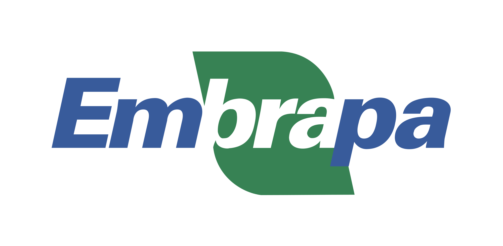
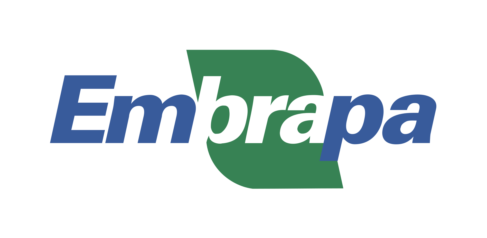

Projects
Android App For Agricultural Data
  
|
Firesense Eureopean Project for Protecting Archeological Sites
Firesense is a Specific Targeted Research Project (STREP) of the European Union's 7th Framework Programme Environment (including Climate Change). As part of this big project, I participated in conceiving and developing a monitoring system with interactive GUI collecting data from different remote sensors to monitor archeological sites and alert authorities in case of fire or severe weather conditions.This project takes advantage of different multi-sensor surveillance technologies including a wireless sensor network capable of monitoring different modalities (e.g. temperature) and optical and infrared cameras, as well as local weather stations on the deployment site. The signals collected from these sensors are transmitted to the monitoring center, which employs intelligent computer vision and pattern recognition algorithms as well as data fusion techniques to automatically analyze sensor information. It is capable of generating automatic warning signals for local authorities whenever a dangerous situation arises.
Optimized Implementation of Ellipitc Curve El Gamal Cryptosystem
As part of my research, I have implemented an optimized version of the Ellipitc Curve El Gamal Cryptosystem using CertiVox MIRACL crypto SDK . I used Pollard-Lambda method to accelerate solving the ECDLP problem for the reverse map during the decryption phase. This implementation could be found in my github repository.Tool for Flood Mapping Using Satellite Images

|
The tools that I used during this project: